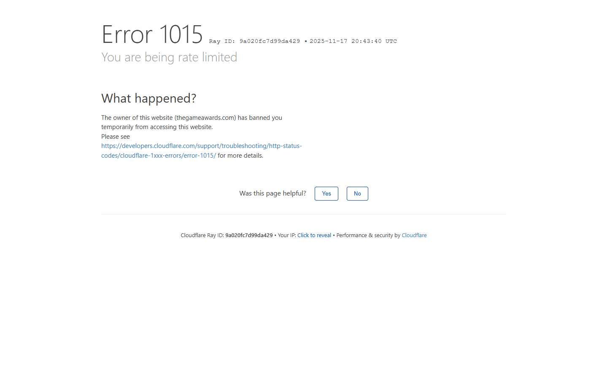

Principais Notícias

Silksong e Hades II Elevam o Prestígio dos Indies no GOTY 2025

Clair Obscur: Expedition 33 Bate Recordes no TGA

Dispatch Resgata o Formato Episódico e Se Consagra
Últimas Notícias

A Convergência Entre Consoles e PCs Está Redefinindo o Mercado
A competição "PC vs. console" está cedendo espaço para um ecossistema mais integrado.

Hades II Expande o Universo Mitológico com Nova Protagonista
Jogo coloca o jogador na pele de Melinoë, filha de Hades e poderosa bruxa.

Rumores Sobre Novo “Sex with Hitler” Apontam Ambientação Medieval
Informações que circulam em fóruns indicam que o anúncio poderia ocorrer em março de 2026.

Rumor: “Revolução” em Franquia de RPG
algumas “fontes próximas ao estúdio” afirmam que o jogo contaria com gráficos de ponta...

Rumor do “Jogo Mais Revolucionário da História” Surge com força
Título apresentaria gráficos ultrarrealistas e IA que se adapta ao jogador...

Caos na Votação: Site do The Game Awards 2025 Colapsa Após Abertura
Plataforma oficial do GOTY sucumbe à demanda de tráfego horas após a revelação dos indicados.